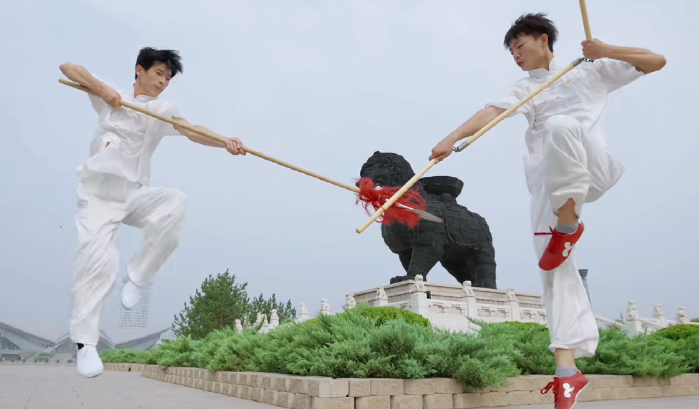
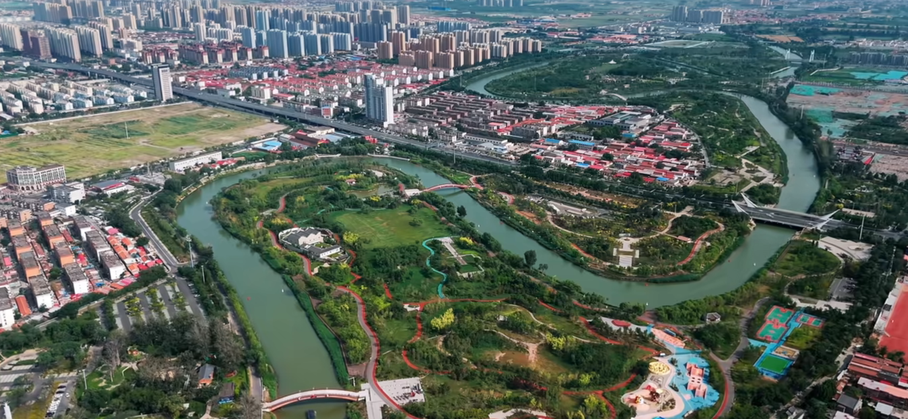
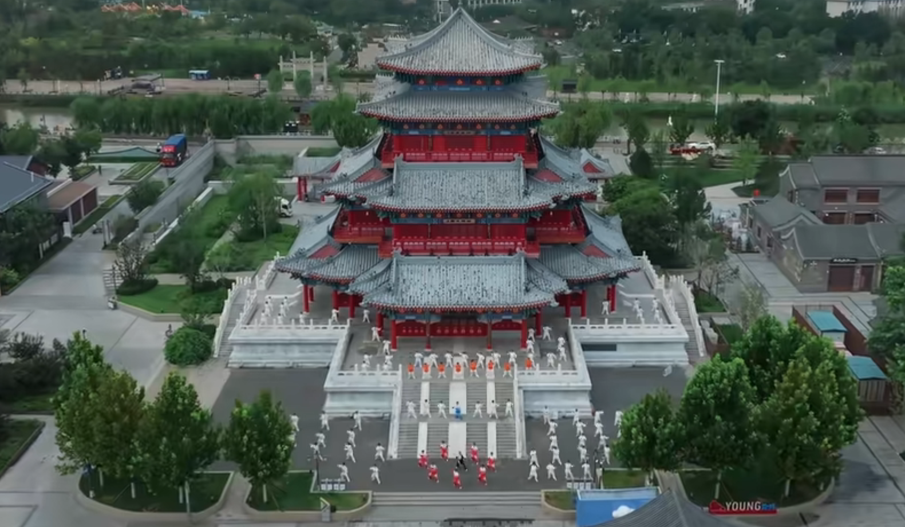

历史介绍
沧州，中国武术之乡，国家级非物质文化遗产传承地，素有“武健泱泱乎有表海雄风”之称。京杭大运河穿城而过，明清漕运繁华催生镖业兴盛，让这里成为南北武林交汇的核心枢纽， 孕育出53个拳种器械，形成“镖不喊沧”的江湖传奇。沧州武术以刚猛实用、尚武崇德为魂，从明清镖师的侠义江湖，到现代国际武术交流的文化名片，千年武魂薪火相传，成为镌刻在 城市血脉中的精神印记。
溯源：运河潮起，武脉绵长
沧州武术的兴起，与大运河的地理馈赠密不可分。明初朱棣定鼎北京后，京杭大运河成为国家经济命脉，沧州作为南北漕运的关键节点，商贾云集、漕船如织，成为南货北运的必经之地， 也催生了对保镖行业的迫切需求。“水镖护漕船，路镖守商道”，繁忙的商贸往来让沧州成为镖业兴盛的沃土，全国各大镖局多由沧州武者创办或由沧州镖师坐镇支撑，万籁声在《武术汇宗》 中曾记载“沧州一带，最出镖师，高人尽多也”。
地理的枢纽地位吸引了无数武林才俊、失意拳师汇聚于此，他们隐身镖局、开设把式房，以武会友、切磋精进，逐渐形成了“全民尚武”的地域风尚。明清时期，沧州武举人数超500人， 拳种体系不断丰富完善，从八极拳、六合拳到劈挂拳，从六合大枪、苗刀到九节鞭，逐渐构建起门类齐全、技法精湛的武术体系，成为中华武术文化的重要发源地和拳种富集地。
传奇：镖不喊沧，侠义为魂
提及沧州武术，“镖不喊沧”的江湖规矩是绕不开的文化符号。这一规矩的形成，源于武林对沧州武术实力的由衷敬畏，其背后流传着六合拳宗师李冠铭的经典故事。据民国《沧县志》 记载，李冠铭力大无穷，曾遇镖客未通谒便在沧州境内喊镖，他驰马追至石坊下，手攀坊梁、以股夹马使其动弹不得，镖客大惊谢罪，此后江湖便形成“凡镖客过沧境，相戒不喊镖”的惯例。
“镖不喊沧”的核心并非恃强凌弱，而是沧州武者“德行天下，镖行天下”的职业操守与侠义精神的体现。沧州镖师历来以“仁义”为立身之本，流传甚广的“仁义镖”传说便印证了这一点：六合拳传人 李冠铭曾救助落难的南七省武林盟主，盟主感念其恩赠旗护镖，让沧州镖旗成为南北通行的“通行证”，更让“南七北六十三省，无人不知沧州李冠铭”的美名传遍江湖。这种融刚猛技法与侠义品德于一体的文化特质， 让沧州武术超越了单纯的技艺范畴，成为承载江湖道义的精神象征。
传承：薪火不熄，焕彩今朝
随着时代变迁，镖业逐渐退出历史舞台，但沧州武术的精神内核却从未消散，反而在新时代焕发出新的生机。2006年，沧州武术被列入第一批国家级非物质文化遗产名录，成为官方认可的文化瑰宝。如今， 沧州拥有近40万武术爱好者、66所武术馆校社、18个传统武术传承基地，八极拳、六合拳等拳种的传承人遍布海内外，仅八极拳习练者就达三十余万人。
在传承推广上，沧州不断创新路径：创编《武脉流长》《武魂》等大型武术舞台剧，让武术文化以艺术形式走进大众；打造中国·沧州国际武术大赛等品牌赛事，承办全国武术套路冠军赛等20余项国家级、省级赛事， 成为国内外武术交流的重要平台。同时，沧州积极推动武术进校园、进社区，在大运河沿线打造武术文化主题公园，开发武术文创产品，更在欧洲、美洲等20多个国家和地区建立传习基地，让沧州武术成为中外文化交流的亮丽名片。
从大运河畔的镖旗猎猎，到国际赛场的切磋竞技；从传统把式房的口传心授，到现代校园的薪火相传，沧州武术早已深深融入城市的文化血脉。如今的沧州，正以“天下武家朝圣地”为目标，让千年武魂在新时代继续书写“武健泱泱”的传奇篇章。
